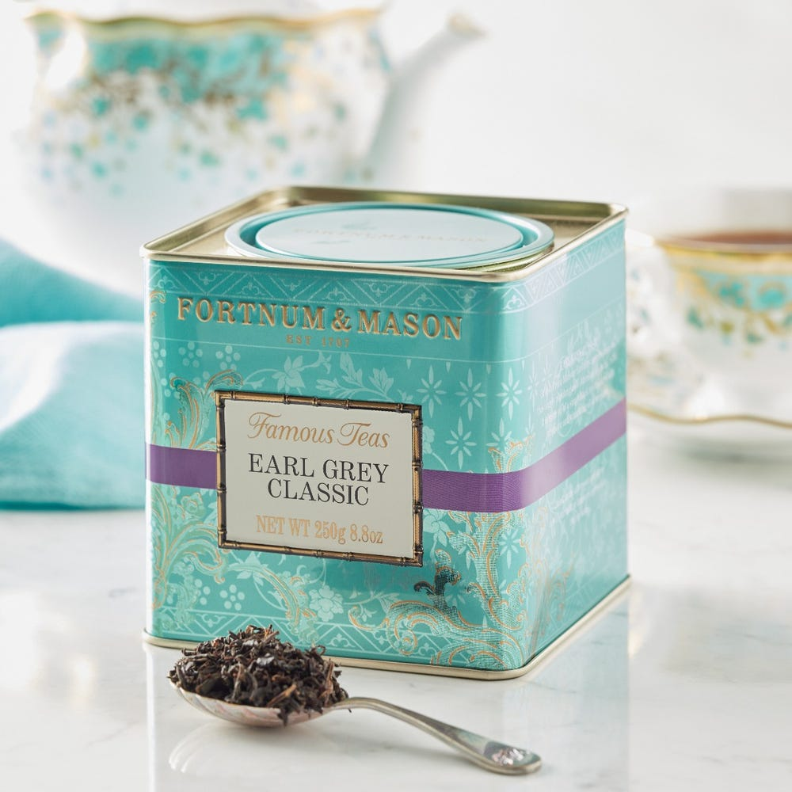

Press 'enter' to reveal content
Aesop catherine oil burner blend always gives me that warm cozy feeling
orange rind + cedar atlas + clove bud
Notes of citrus in Earl Grey tea are always so nice.
I think I like Earl Grey more than Assam tea.
But when I have a cold, lemon ginger honey tea is my lifesaver.
Where you pour your tea also matters a lot.
In general, I prefer a glass cup over a mug—you can see the tea’s color.
Emelie gifted me this teapot.
I used it so well until my roommate dropped it and broke it.
Now I’m on my third teapot in the apartment.